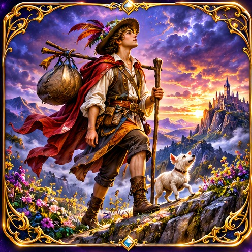
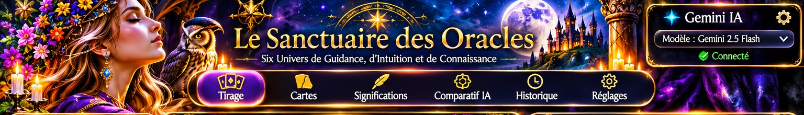
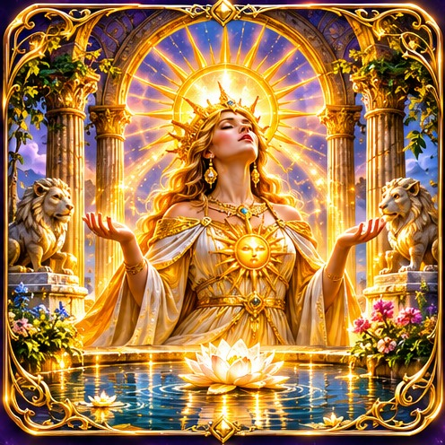
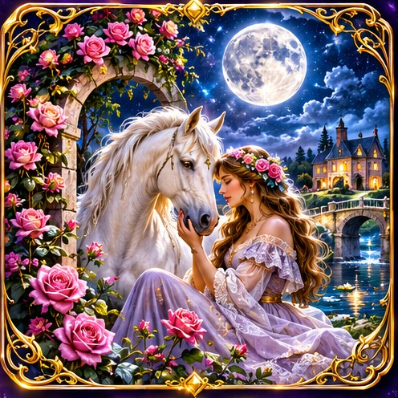
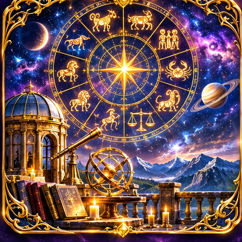
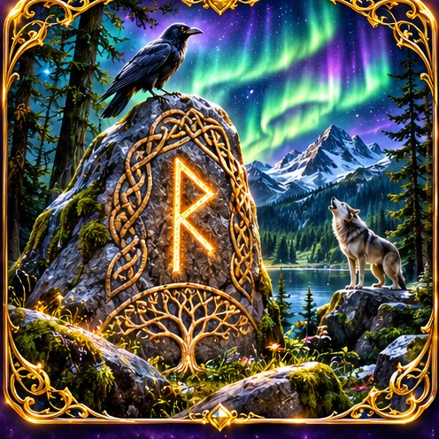
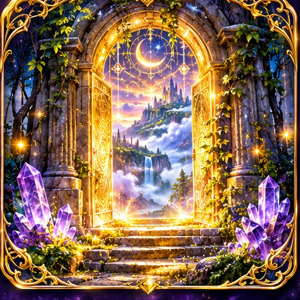

Prochainement
I · LES 78 ARCANES
Le Tarot
Archétypes · Cheminement · Révélation
Entrez dans un espace dédié à la contemplation, aux arts divinatoires et à l'exploration de votre intuition. Six traditions, un même sanctuaire : le vôtre.


Archétypes · Cheminement · Révélation

Influences · Cycles · Éclairages

Symboles · Liens · Perspectives

Thèmes · Planètes · Correspondances

Tradition nordique · Forces · Sagesse

Exploration · Ressenti · Introspection
Retrouvez vos consultations, vos notes et le fil de vos explorations.
Préparez vos préférences d'interprétation et vos connexions IA.
À terme, faites dialoguer plusieurs traditions autour d'une même question.
Ces réglages sont préparatoires. Les connexions IA seront activées lors de l'intégration des oracles. Les clés saisies restent dans le stockage local de ce navigateur.
Votre espace de mémoire des tirages sera construit avec le premier oracle. Les consultations et notes pourront ensuite être retrouvées ici.
« Ce que l'on observe avec attention commence à prendre sens. »